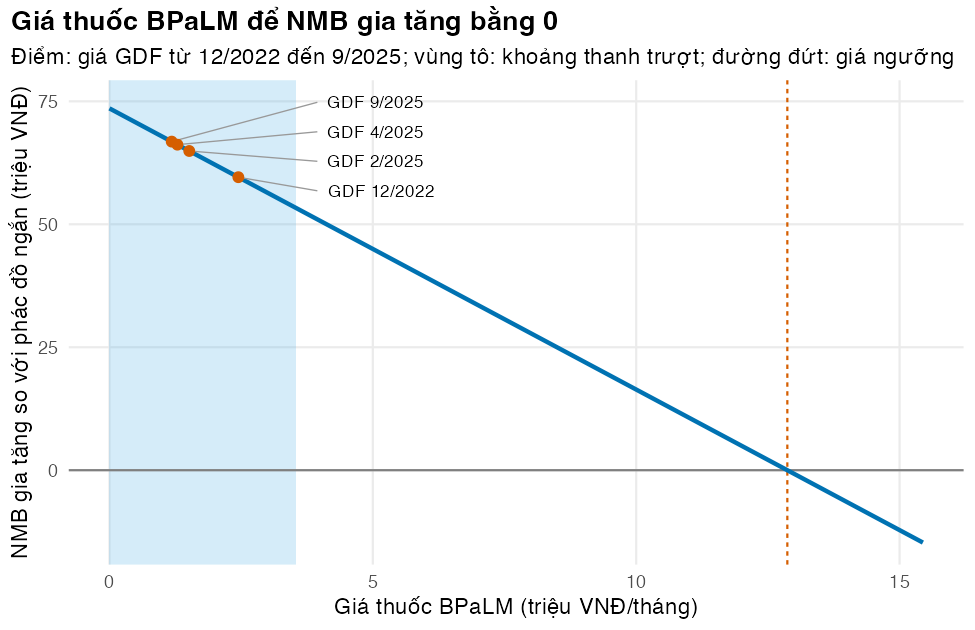

Đưa mô hình đến người ra quyết định qua một giao diện tương tác, và cập nhật nó tự động mà vẫn an toàn
Vì sao bạn nên quan tâm?
Trong một buổi họp ở sở y tế, lãnh đạo hỏi: “Nếu giá BPaLM tăng gấp đôi thì sao? Nếu dùng ngưỡng chi phí-hiệu quả thấp hơn, 62.75 triệu VNĐ cho mỗi năm sống điều chỉnh theo chất lượng (QALY) thay vì 125.5 triệu (một lần GDP bình quân đầu người năm 2025) thì sao?” (Cục Thống kê (Bộ Tài chính) 2026; Woods và c.s. 2016). Một ứng dụng tốt trả lời trong vài giây mà không cho ai chép công thức ra bảng tính riêng. Mô hình cũng phải theo kịp thực tế: từ ngày 26/5/2026, bảng giá BHYT mới đưa chi phí theo dõi mỗi tháng từ 565,100 VNĐ lên 587,700 VNĐ (Bộ Y tế 2026), thêm khoảng 0.6 bát phở cho mỗi người bệnh mỗi tháng (Nhadautu.vn 2025). Bài này giúp bạn quyết định đưa gì lên màn hình cho người ra quyết định, và cập nhật mô hình tự động thế nào để một lỗi gõ không lọt tới họ.
Mục tiêu học tập
Sau bài này, bạn có thể:
Giải thích khi nào ứng dụng Shiny (Shiny app) giúp truyền đạt mô hình, và giới hạn của nó.
Dựng ứng dụng Shiny tối giản gồm giao diện (ui) và máy chủ (server), trong đó mọi phép tính do hàm của mô hình đảm nhận.
Kiểm thử phần máy chủ của ứng dụng bằng testServer() mà không cần trình duyệt.
Mô tả mô hình “sống” (living model) và dựng một quy trình cập nhật tự động có các cổng kiểm tra.
Ý chính
Ứng dụng là giao diện, không phải mô hình: không chép logic mô hình vào ứng dụng; nó chỉ gọi run_model() (ba phác đồ, đường biên, so sánh BPaLM với phác đồ ngắn) và nmb_by_wtp().
Shiny nối đầu vào với đầu ra bằng biểu thức phản ứng (reactive): đầu vào → params() → model() → mọi đầu ra, và mô hình chạy một lần mỗi khi đầu vào đổi.
Chỉ cho đổi tham số có ý nghĩa, trong khoảng lấy từ bảng tham số; ghi rõ nguồn của giá và ngưỡng, số phiên bản và mã tham số. Thanh trượt trả lời “nếu… thì sao”, không thay cho phân tích bất định (M03).
testServer() kiểm thử phần máy chủ như một hàm (đặt đầu vào, đọc biểu thức phản ứng và đầu ra), nhanh và ổn định hơn kiểm thử bằng trình duyệt (Posit không ngày).
Mô hình “sống” được cập nhật khi có bằng chứng mới. Tự động hóa chỉ an toàn khi bản cập nhật qua các cổng (đầu vào hợp lệ, kiểm thử đạt, người duyệt) và mỗi bản công bố được lưu theo phiên bản và mã tham số.
Nội dung
Khi nào cần một ứng dụng
Shiny nhúng mô hình viết bằng R vào giao diện web, để người dùng tự đặt giả định và chạy kịch bản mà không viết mã; với mô hình Markov thông thường mỗi lần chạy chỉ mất vài giây hoặc ít hơn (R. Smith và Schneider 2020). Nhóm phân tích, cán bộ chương trình chống lao và cơ quan chi trả cùng nhìn một con số, cùng thử một giả định (R với Shiny hay Excel: Bài 1, (Hart và c.s. 2020)). Rủi ro: người dùng chọn tổ hợp cho ra kết quả mình muốn, và giao diện đẹp làm mô hình trông đáng tin hơn thực tế; hãy giới hạn đầu vào và trỏ tới báo cáo có phân tích bất định.
Cấu trúc của một ứng dụng Shiny
Ứng dụng viết bằng gói shiny có hai phần (Chang và c.s. 2026; Wickham 2021): ui mô tả trang (đầu vào như thanh trượt, ô chọn; chỗ hiển thị đầu ra) và server là hàm nối chúng. Trong ứng dụng của module:
flowchart LR I1["Giá thuốc ba phác đồ<br/>(% giá cơ sở)"] --> PR["params()"] I3["Ngưỡng"] --> PR I4["Chiết khấu"] --> PR I5["Cách áp RR cho tử vong"] --> PR PR --> MO["model()<br/>= run_model(params())"] MO --> O1["Câu kết luận<br/>(NMB cao nhất; BPaLM so với phác đồ ngắn)"] MO --> O2["Bảng ba phác đồ<br/>và đường biên"] MO --> O3["Hình lợi ích ròng theo ngưỡng<br/>(nmb_by_wtp)"] MO --> O4["Phiên bản mô hình<br/>và mã tham số"]
flowchart LR
I1["Giá thuốc ba phác đồ<br/>(% giá cơ sở)"] --> PR["params()"]
I3["Ngưỡng"] --> PR
I4["Chiết khấu"] --> PR
I5["Cách áp RR cho tử vong"] --> PR
PR --> MO["model()<br/>= run_model(params())"]
MO --> O1["Câu kết luận<br/>(NMB cao nhất; BPaLM so với phác đồ ngắn)"]
MO --> O2["Bảng ba phác đồ<br/>và đường biên"]
MO --> O3["Hình lợi ích ròng theo ngưỡng<br/>(nmb_by_wtp)"]
MO --> O4["Phiên bản mô hình<br/>và mã tham số"]
params() và model() là biểu thức phản ứng: Shiny nhớ kết quả và chỉ tính lại khi đầu vào của chúng đổi, nên bốn đầu ra dùng chung một lần chạy mô hình.
Nguyên tắc thiết kế
Không có logic mô hình trong ứng dụng: mọi phép tính đi qua hàm công khai của mô hình, nên sửa mô hình thì ứng dụng tự đúng theo.
Ít đầu vào, giới hạn lấy từ bảng tham số: ngưỡng và chiết khấu theo khoảng của kb/_shared (từ 0.5 đến 3 lần GDP bình quân đầu người; 0 đến 5%); giá thuốc không có khoảng nên thanh trượt tính theo phần trăm giá cơ sở, để 100% luôn đúng bằng phân tích cơ sở. Giả định cấu trúc quan trọng của M02 (cách áp RR cho tử vong) là ô chọn với ba lựa chọn định sẵn.
Minh bạch ngay trên màn hình: nguồn của giá và ngưỡng, số phiên bản mô hình (nhãn Git, Bài 3) và mã tham số, để ảnh chụp màn hình truy được nguồn gốc con số.
Nhanh. Một lần chạy mất vài phần trăm giây nên ứng dụng phản hồi tức thì; phân tích độ nhạy xác suất (PSA) hàng nghìn lần chạy thì không: tính trước.
Mô hình “sống”
Đánh giá công nghệ y tế thường làm một lần rồi lạc hậu. Thokala và cộng sự định nghĩa đánh giá công nghệ y tế “sống” (living HTA) là cập nhật định kỳ hoặc theo lịch, thủ công hoặc bán tự động, và lưu ý cách làm này không cần cho mọi đánh giá (Thokala và c.s. 2023). Smith và cộng sự minh họa bằng R: mô hình xây trên dữ liệu giả; dữ liệu thật nằm sau một API do bên giữ dữ liệu vận hành; quy trình tự động gọi API, nhận kết quả (không nhận dữ liệu), xuất báo cáo theo lịch hoặc khi dữ liệu hay mã đổi (R. A. Smith, Schneider, và Mohammed 2022).
Nhưng tự động hóa cũng tự động hóa cả lỗi. Quy trình của module có ba cổng, bản qua cả ba mới được công bố: (1) validate_params() chấp nhận đầu vào; (2) toàn bộ kiểm thử đạt với tham số mới; (3) mô hình chạy và trả kết quả. Thực tế còn cổng thứ tư: người duyệt thay đổi (yêu cầu hợp nhất, Bài 3). Mỗi bản công bố được lưu dưới số phiên bản và mã tham số, để từ nhật ký hay ảnh chụp màn hình tìm lại đúng bảng và chạy lại đúng kết quả.
GitHub Actions chạy các cổng này mỗi lần có thay đổi; r-lib/actions có sẵn các bước cài R, cài gói và chạy R CMD check(r-lib không ngày; Perez-Riverol và c.s. 2016). Tệp quy trình minh họa (không chạy trong khóa học):
# .github/workflows/update-model.yaml (illustrative)name: update-modelon:push:paths:["params/**","R/**","tests/**"]schedule:-cron:"0 2 1 * *" # 02:00 UTC on the first day of each monthjobs:check-and-run:runs-on: ubuntu-lateststeps:-uses: actions/checkout@v7-uses: r-lib/actions/setup-r@v2-uses: r-lib/actions/setup-r-dependencies@v2-uses: r-lib/actions/check-r-package@v2 # R CMD check, including the tests-run: Rscript code/run-update.R # gates 1-3, then a draft report
Thực hành
Nạp mô hình, shiny, testthat và bảng tham số đầy đủ; shinyAppDir("app") đọc ứng dụng mà không mở máy chủ web. Kiểm tra: không có lỗi. Để mở ứng dụng thật, chạy shiny::runApp("app") trong phiên R tương tác, từ thư mục module.
# Vietnamese text in tables and figures needs a UTF-8 locale (Rscript may start in "C")if (!isTRUE(l10n_info()[["UTF-8"]])) invisible(Sys.setlocale("LC_CTYPE", "en_US.UTF-8"))source("../_shared/R/helpers.R")source("../_shared/R/vn_data.R")source("code/model.R")library(ggplot2)library(shiny)library(testthat)invisible(set_reporter(StopReporter$new(praise =FALSE))) # quiet when tests pass# The complete parameter table (M02 + kb/_shared); the app and default_params() read itparam_file <-write_param_table(assemble_params("../m02-cohort-markov/params/mdrtb.csv", "../_shared"),file.path(tempdir(), "mdrtbvn-params.csv"))options(mdrtbvn.params = param_file)p <-read_param_file(param_file)ptab <-attr(p, "table")app <-shinyAppDir("app") # loads app/app.R without starting a web serverapp_lines <-readLines("app/app.R")pct_max <-300# PRICE_PCT_MAX in app/app.R: the price sliders end at 300% of the base pricestopifnot(any(grepl(paste0("^PRICE_PCT_MAX <- ", pct_max, "$"), app_lines)))
Phần chuẩn bị của ứng dụng (app/app.R): nạp mô hình và bảng tham số (các dòng ghi “module only” ghép bảng từ M02 và kb/_shared; trong gói, bảng đi kèm gói), lấy giới hạn thanh trượt từ bảng. Kiểm tra: không tham số nào gõ cứng; hằng PRICE_PCT_MAX là lựa chọn giao diện, không phải tham số.
library(shiny)library(ggplot2)source("../code/model.R", local =TRUE) # module only: the installed package provides these functionsif (is.null(getOption("mdrtbvn.params"))) { # module only: assemble M02's table + kb/_shared once tab <-assemble_params("../../m02-cohort-markov/params/mdrtb.csv", "../../_shared") # module onlyoptions(mdrtbvn.params =write_param_table(tab, tempfile(fileext =".csv"))) # module only} # module onlyp_base <-default_params()base_tab <-attr(p_base, "table")# Slider limits come from the parameter table (low, value, high). Drug prices have no range# in the table, so their sliders are a percentage of the base price, from 0 to PRICE_PCT_MAXPRICE_PCT_MAX <-300range_of <-function(nm, scale =1) as.numeric(base_tab[base_tab$name == nm, c("low", "value", "high")]) * scalefmt_m <-function(x) formatC(x /1e6, format ="f", digits =2, big.mark =",")regimen_vi <-c(long ="Phác đồ dài hạn", short ="Phác đồ ngắn 9 tháng", bpalm ="BPaLM")status_vi <-c(dominant ="BPaLM chiếm ưu thế so với phác đồ ngắn (rẻ hơn và hiệu quả hơn)",dominated ="BPaLM bị lấn át bởi phác đồ ngắn (đắt hơn và kém hiệu quả hơn)",ne ="BPaLM đắt hơn và hiệu quả hơn phác đồ ngắn",sw ="BPaLM rẻ hơn nhưng kém hiệu quả hơn phác đồ ngắn",equivalent ="BPaLM và phác đồ ngắn tương đương")frontier_vi <-c(frontier ="trên đường biên", dominated ="bị lấn át",ext_dominated ="bị lấn át mở rộng")price_slider <-function(id, regimen, param) {sliderInput(id, paste0("Giá thuốc ", regimen_vi[[regimen]], " (% giá cơ sở ",fmt_m(p_base[[param]]), " triệu VNĐ/tháng)"),min =0, max = PRICE_PCT_MAX, value =100, step =5)}
Giao diện: sáu đầu vào ở thanh bên, bốn đầu ra ở phần chính. Kiểm tra: giới hạn thanh trượt ngưỡng và chiết khấu đến từ bảng.
ui <-fluidPage(titlePanel("Lao đa kháng: ba phác đồ điều trị tại Việt Nam"),sidebarLayout(sidebarPanel(price_slider("price_bpalm", "bpalm", "c_drug_bpalm"),price_slider("price_short", "short", "c_drug_short"),price_slider("price_long", "long", "c_drug_long"),sliderInput("wtp", "Ngưỡng chi phí-hiệu quả (triệu VNĐ/QALY)",min =range_of("wtp", 1e-6)[1], max =range_of("wtp", 1e-6)[3],value =range_of("wtp", 1e-6)[2], step =0.25),sliderInput("disc_rate", "Tỷ lệ chiết khấu (%/năm)",min =range_of("disc_rate", 100)[1], max =range_of("disc_rate", 100)[3],value =range_of("disc_rate", 100)[2], step =0.5),selectInput("bpalm_death_rule", "Cách áp RR cho tử vong khi điều trị BPaLM",choices =c("0: chỉ thất bại và bỏ điều trị (cơ sở)"="0","1: áp cho cả tử vong"="1","2: tỷ lệ tử vong như phác đồ ngắn"="2")),helpText("Giá thuốc: Global Drug Facility; theo dõi: bảng giá BHYT; ngưỡng: 1 × GDP bình quân","đầu người (kb/_shared). Kết quả cho một người bệnh", p_base$age_start, "tuổi, có chiết khấu.") ),mainPanel(h4(textOutput("decision")),tableOutput("results"),plotOutput("nmb_plot", height ="300px"),textOutput("version") ) ))
Phần máy chủ: đầu vào thành danh sách tham số, một lần chạy mô hình, bốn đầu ra. Kiểm tra: không dòng nào tự tính lợi ích ròng quy ra tiền (NMB); đường cong theo ngưỡng do nmb_by_wtp() trả về.
server <-function(input, output, session) {# 1. Inputs -> parameter list (the only place where the UI touches parameters) params <-reactive({ p <- p_base p$c_drug_bpalm <- p_base$c_drug_bpalm * input$price_bpalm /100 p$c_drug_short <- p_base$c_drug_short * input$price_short /100 p$c_drug_long <- p_base$c_drug_long * input$price_long /100 p$wtp <- input$wtp *1e6 p$disc_rate <- input$disc_rate /100 p$bpalm_death_rule <-as.numeric(input$bpalm_death_rule) p })# 2. One model run per change of input; every output reuses this result model <-reactive(run_model(params()))# 3. Outputs output$decision <-renderText({ fr <-model()$frontier cmp <-model()$comparisonpaste0("NMB cao nhất: ", regimen_vi[[fr$strategy[fr$optimal][1]]], ". ", status_vi[[cmp$status]],"; NMB gia tăng: ", fmt_m(cmp$d_nmb), " triệu VNĐ/người.") }) output$results <-renderTable({ res <-model()$results fr <-model()$frontier cmp <-model()$comparison cell <-function(g) c(fmt_m(res[g, "cost"]), sprintf("%.3f", res[g, "qaly"]),fmt_m(res[g, "nmb"]), frontier_vi[[fr[g, "status"]]])data.frame(`Kết quả`=c("Chi phí (triệu VNĐ)", "QALY", "NMB (triệu VNĐ)", "Đường biên hiệu quả"),`Phác đồ dài hạn`=cell("long"),`Phác đồ ngắn 9 tháng`=cell("short"),BPaLM =cell("bpalm"),`BPaLM so với phác đồ ngắn`=c(fmt_m(cmp$d_cost), sprintf("%.3f", cmp$d_qaly), fmt_m(cmp$d_nmb), ""),check.names =FALSE ) }) output$nmb_plot <-renderPlot({# The curve comes from the model (nmb_by_wtp), over the slider's own threshold range grid <-seq(0, range_of("wtp")[3], length.out =61) df <-nmb_by_wtp(model()$comparison, grid)ggplot(df, aes(wtp /1e6, d_nmb /1e6)) +geom_hline(yintercept =0, colour ="grey50") +geom_vline(xintercept = input$wtp, linetype ="22") +geom_line(linewidth =1, colour ="#0072B2") +labs(x ="Ngưỡng (triệu VNĐ/QALY)", y ="NMB gia tăng, BPaLM so với phác đồ ngắn (triệu VNĐ)") +theme_minimal(base_size =13) })# Release number (the Git tag) and the id of the parameter set actually used output$version <-renderText(paste0("Phiên bản mô hình: ", model()$version," · mã bảng tham số: ", model()$param_id))}
Kiểm tra cấu trúc ứng dụng bằng code. Kiểm tra: đúng một lời gọi run_model(), không hàm nội bộ nào, không phép tính trên kết quả. Đây chỉ là phép thử thô, không loại trừ được logic chép từ mô hình.
# The app is small and holds no model logic: it calls run_model() once, and none of# the model's internal functions. These greps are a crude proxy (they cannot prove the# absence of copied logic); the real protection is the testServer() comparison below.n_app_code <-sum(nzchar(trimws(app_lines)) &!grepl("^\\s*#", app_lines))internal <-c("prepare_inputs", "build_P", "run_trace", "summarise_regimen", "competing_probs","cea_frontier", "compare_regimens")uses_internal <-vapply(internal, function(f) any(grepl(paste0(f, "("), app_lines, fixed =TRUE)),logical(1))# Arithmetic on model outputs (a formula in the app) would look like d_qaly * ... or ... - d_costformula_like <-grepl("(d_qaly|d_cost|\\$qaly|\\$cost)\\s*[-+*/]|[-+*/]\\s*[a-z_$]*(d_qaly|d_cost)", app_lines)c(code_lines = n_app_code, run_model_calls =sum(grepl("run_model(", app_lines, fixed =TRUE)),internal_calls =sum(uses_internal), formula_lines =sum(formula_like))
Ứng dụng chỉ có 100 dòng mã. Phép bảo vệ thật là so sánh với mô hình: testServer() đặt đầu vào bằng phân tích cơ sở, đọc kết quả, rồi kéo giá BPaLM tới 300% giá cơ sở. Kiểm tra: ứng dụng cho đúng lợi ích ròng quy ra tiền gia tăng (ΔNMB) của run_model(); ΔNMB giảm khi giá tăng; mã tham số trên màn hình đổi khi thanh trượt dịch chuyển.
# Test the server without a browser: set the inputs, then read reactives and outputs.# testServer() returns nothing, so results are stored in an environment we own.# Prices are sliders in % of the base price of the table the app reads (`base`).inputs_from <-function(p, base = p) {list(price_bpalm =100* p$c_drug_bpalm / base$c_drug_bpalm,price_short =100* p$c_drug_short / base$c_drug_short,price_long =100* p$c_drug_long / base$c_drug_long,wtp = p$wtp /1e6, disc_rate =100* p$disc_rate,bpalm_death_rule =as.character(p$bpalm_death_rule))}captured <-new.env()testServer(app, {do.call(session$setInputs, inputs_from(p))assign("base", model()$comparison, envir = captured)assign("base_frontier", model()$frontier, envir = captured)assign("decision", output$decision, envir = captured)assign("version", output$version, envir = captured) session$setInputs(price_bpalm = pct_max) # move one slider to its maximumassign("high_price", model()$comparison, envir = captured)assign("high_price_version", output$version, envir = captured)})direct <-run_model(p)c(app_d_nmb_million = captured$base$d_nmb /1e6, direct_d_nmb_million = direct$comparison$d_nmb /1e6,app_high_price_d_nmb_million = captured$high_price$d_nmb /1e6)
[1] "NMB cao nhất: BPaLM. BPaLM chiếm ưu thế so với phác đồ ngắn (rẻ hơn và hiệu quả hơn); NMB gia tăng: 66.81 triệu VNĐ/người."
captured$version
[1] "Phiên bản mô hình: 1.0.0 · mã bảng tham số: 8e7e2fa0"
expect_equal(captured$base$d_nmb, direct$comparison$d_nmb) # app = model, same inputsexpect_lt(captured$high_price$d_nmb, captured$base$d_nmb) # dearer BPaLM, lower NMB# The screen carries the release number and the id of the parameters it used: the base# case has the id of the M02 table, and a moved slider gives another idexpect_match(captured$version, paste0(direct$version, " · mã bảng tham số: ", direct$param_id), fixed =TRUE)expect_false(identical(captured$version, captured$high_price_version))
Cùng đầu vào, ứng dụng và mô hình cùng cho ΔNMB của BPaLM so với phác đồ ngắn là 66.8 triệu VNĐ; ở giá BPaLM cao nhất của thanh trượt, ΔNMB còn 53.3. Màn hình ghi “NMB cao nhất: BPaLM. BPaLM chiếm ưu thế so với phác đồ ngắn (rẻ hơn và hiệu quả hơn); NMB gia tăng: 66.81 triệu VNĐ/người.” và, ở dòng cuối, “Phiên bản mô hình: 1.0.0 · mã bảng tham số: 8e7e2fa0”.
Câu hỏi đằng sau thanh trượt giá: giá BPaLM mỗi tháng bằng bao nhiêu thì ΔNMB so với phác đồ ngắn bằng 0, và các mức giá GDF thật đã nằm ở đâu? Kiểm tra: ΔNMB giảm đều theo giá, bằng 0 tại giá ngưỡng; giá 9/2025 trùng giá cơ sở.
# The question behind the price slider: at which monthly BPaLM price does the# incremental NMB versus the short regimen reach zero? And where were GDF's real prices?d_nmb_at <-function(price) { q <- p q$c_drug_bpalm <- pricerun_model(q)$comparison$d_nmb}price_zero <- stats::uniroot(d_nmb_at, lower =0, upper =100* p$c_drug_bpalm)$rootprices <-seq(0, 1.2* price_zero, length.out =25)curve <-data.frame(price_million = prices /1e6,d_nmb_million =vapply(prices, d_nmb_at, numeric(1)) /1e6)# GDF prices of BPaLM since WHO's recommendation (module file, USD per 6-month course);# the September 2025 price is the course price in kb/_sharedctx <-vn_context()gdf <-read_params("params/gdf-prices.csv")gdf_usd <-c(`12/2022`= gdf$gdf_bpalm_2022_12, `2/2025`= gdf$gdf_bpalm_2025_02,`4/2025`= gdf$gdf_bpalm_2025_04, `9/2025`=vn_prices()$tb_regimen_bpalm_6m / ctx$fx_vnd_per_usd)gdf_month <- gdf_usd * ctx$fx_vnd_per_usd / p$dur_bpalm # VND per month at today's exchange rateround(c(threshold_price_million = price_zero /1e6, ratio_to_base = price_zero / p$c_drug_bpalm,ratio_to_2022_price = price_zero / gdf_month[["12/2022"]]), 2)
Hình dưới vẽ đường cong đó, các mức giá GDF từ 12/2022 (quy đổi bằng tỷ giá chung của khóa học) và khoảng của thanh trượt.
gdf_pts <-data.frame(label =names(gdf_month), price_million = gdf_month /1e6,d_nmb_million =vapply(gdf_month, d_nmb_at, numeric(1)) /1e6)# Labels to the right of the points, spread vertically so that close prices stay readablegdf_pts$label_x <-max(gdf_pts$price_million) +1.5gdf_pts$label_y <-max(gdf_pts$d_nmb_million) +8-6* (rank(-gdf_pts$d_nmb_million) -1)fig_price <-ggplot(curve, aes(price_million, d_nmb_million)) +annotate("rect", xmin =0, xmax = pct_max /100* p$c_drug_bpalm /1e6, ymin =-Inf, ymax =Inf,fill = pal_course[5], alpha =0.25) +geom_hline(yintercept =0, colour ="grey50") +geom_vline(xintercept = price_zero /1e6, linetype ="22", colour = pal_course[2]) +geom_line(colour = pal_course[1], linewidth =1) +geom_segment(data = gdf_pts, aes(xend = label_x, yend = label_y), colour ="grey60", linewidth =0.3) +geom_point(data = gdf_pts, colour = pal_course[2], size =2) +geom_text(data = gdf_pts, aes(x = label_x, y = label_y, label =paste("GDF", label)),hjust =-0.1, size =3) +labs(x ="Giá thuốc BPaLM (triệu VNĐ/tháng)", y ="NMB gia tăng so với phác đồ ngắn (triệu VNĐ)",title ="Giá thuốc BPaLM để NMB gia tăng bằng 0",subtitle ="Điểm: giá GDF từ 12/2022 đến 9/2025; vùng tô: khoảng thanh trượt; đường đứt: giá ngưỡng") +theme_course()save_fig(fig_price, "l05-price-nmb.png", width =6.5, height =4.2)

ΔNMB của BPaLM so với phác đồ ngắn theo giá thuốc mỗi tháng
Giá ngưỡng khoảng 12.9 triệu VNĐ mỗi tháng, gấp 10.9 lần giá GDF hiện tại và 5.3 lần giá 12/2022 (European AIDS Treatment Group 2025), nên nằm ngoài khoảng thanh trượt và ứng dụng không hiện con số này: câu hỏi “đến giá nào thì không còn đáng” cần phân tích ngưỡng riêng (M01, M03). Mọi mức giá GDF đã có đều cho ΔNMB dương: với các giả định của M02, kết luận về BPaLM không phụ thuộc vào đợt giảm giá nào.
Quy trình cập nhật của mô hình “sống”: áp lần lượt ba bản cập nhật trong params/ (giá bedaquiline giảm, bảng giá BHYT 2026, và một bản có lỗi gõ), mỗi bản qua ba cổng; bản được công bố nhận số phiên bản MINOR mới và được lưu theo phiên bản và mã tham số. Kiểm tra: hai bản đầu được công bố; bản thứ ba (23 thay vì 0.23) bị chặn ở cổng 1; mỗi dòng công bố tìm lại được bảng đã lưu và chạy lại cho đúng ΔNMB trong nhật ký.
# A "living" model in miniature. Each evidence update passes three gates before its# results are published: (1) valid inputs, (2) every test passes on the updated# parameters, (3) the model runs. A rejected update leaves the published version as is.# Each published table is stored under its release number and parameter id, so that a# result can be traced back to its inputs (in practice this folder lives in Git, Lesson 3).model_env <-new.env()sys.source("code/model.R", envir = model_env)registry <-file.path(tempdir(), "published")unlink(registry, recursive =TRUE)dir.create(registry)next_minor <-function(v) { # evidence update = MINOR step (Lesson 3) x <-as.integer(strsplit(v, ".", fixed =TRUE)[[1]])paste(c(x[1], x[2] +1, 0), collapse =".")}publish <-function(tab, version) { id <-param_fingerprint(params_from_table(tab)) utils::write.csv(tab, file.path(registry, paste0("v", version, "_", id, ".csv")),row.names =FALSE, na ="", fileEncoding ="UTF-8")}check_update <-function(tab, version, update_file) { upd <- utils::read.csv(update_file, stringsAsFactors =FALSE, encoding ="UTF-8") new_tab <-apply_updates(tab, upd) p_new <-params_from_table(new_tab) row <-data.frame(update =basename(update_file), param_id =param_fingerprint(p_new),valid =FALSE, tests =NA_character_, d_nmb_million =NA_real_,published =FALSE, version =NA_character_, problem ="") gate1 <-tryCatch({ validate_params(p_new); "" }, error = conditionMessage) # gate 1if (nzchar(gate1)) { row$problem <-sub("^.*\n- ", "", gate1)return(list(row = row, tab = tab, version = version)) } row$valid <-TRUE f <-tempfile(fileext =".csv") # gate 2 utils::write.csv(new_tab, f, row.names =FALSE, na ="", fileEncoding ="UTF-8") old <-options(mdrtbvn.params = f)on.exit(options(old)) r <-as.data.frame(test_dir("tests/testthat", env = model_env, reporter ="silent",stop_on_failure =FALSE)) n_pass <-sum(r$failed ==0&!r$error) row$tests <-paste0(n_pass, "/", nrow(r))if (n_pass <nrow(r)) { row$problem <-"kiểm thử không đạt"return(list(row = row, tab = tab, version = version)) } row$d_nmb_million <-run_model(p_new)$comparison$d_nmb /1e6# gate 3 row$published <-TRUE row$version <-next_minor(version)publish(new_tab, row$version)list(row = row, tab = new_tab, version = row$version)}published <- utils::read.csv(param_file, stringsAsFactors =FALSE, encoding ="UTF-8")version <- MODEL_VERSIONpublish(published, version)log_rows <-data.frame(update ="(phân tích cơ sở: M02 + kb/_shared)", param_id =param_fingerprint(p),valid =TRUE, tests =NA_character_, d_nmb_million = direct$comparison$d_nmb /1e6,published =TRUE, version = version, problem ="")for (f insort(list.files("params", pattern ="^update-.*\\.csv$", full.names =TRUE))) { step <-check_update(published, version, f) published <- step$tab # unchanged if the update was rejected version <- step$version log_rows <-rbind(log_rows, step$row)}yes_no <-function(x) ifelse(x, "có", "không")log_show <- log_rowslog_show$valid <-yes_no(log_show$valid)log_show$published <-yes_no(log_show$published)log_show$tests[is.na(log_show$tests)] <-"—"log_show$version[is.na(log_show$version)] <-"—"log_show$d_nmb_million <-ifelse(is.na(log_show$d_nmb_million), "—", fmt_num(log_show$d_nmb_million, 2))knitr::kable(log_show[, c("update", "param_id", "valid", "tests", "d_nmb_million", "published", "version", "problem")],align ="llllrlll",col.names =c("Bản cập nhật", "Mã tham số", "Cổng 1: hợp lệ", "Cổng 2: kiểm thử","ΔNMB (triệu VNĐ)", "Công bố", "Phiên bản", "Lý do bị chặn"))
Bản cập nhật
Mã tham số
Cổng 1: hợp lệ
Cổng 2: kiểm thử
ΔNMB (triệu VNĐ)
Công bố
Phiên bản
Lý do bị chặn
(phân tích cơ sở: M02 + kb/_shared)
8e7e2fa0
có
—
66.81
có
1.0.0
update-01-price.csv
1346c1ec
có
54/54
66.18
có
1.1.0
update-02-monitoring.csv
831a09ab
có
54/54
66.25
có
1.2.0
update-03-typo.csv
56296303
không
—
—
không
—
ae_bpalm = 23 is outside [0, 1]
stopifnot(identical(log_rows$published, c(TRUE, TRUE, TRUE, FALSE)))# The published parameters after the run are those of the last accepted updatestopifnot(published$value[published$name =="ae_bpalm"] == p$ae_bpalm)# Traceability: every published row resolves to a stored table that reproduces its resultok <- log_rows[log_rows$published, ]files <-vapply(seq_len(nrow(ok)), function(i) { hit <-list.files(registry, pattern =paste0("^v", ok$version[i], "_", ok$param_id[i], "\\.csv$"))if (length(hit) !=1) NA_character_else hit}, character(1))rerun <-vapply(files, function(f) {run_model(params_from_table(utils::read.csv(file.path(registry, f), stringsAsFactors =FALSE,encoding ="UTF-8")))$comparison$d_nmb /1e6}, numeric(1))data.frame(stored_file = files, rerun_d_nmb_million =round(rerun, 2), row.names =NULL)
Bản cập nhật lỗi không đến được bảng kết quả: nhật ký ghi lý do, và phiên bản đang công bố vẫn là bản hợp lệ cuối. Trong quy trình thật, công bố là một commit kèm nhãn như Bài 3 (ghi luôn số phiên bản vào MODEL_VERSION); ở đây thư mục lưu tạm đóng vai kho Git.
Mẹo thực hành
Viết mô hình và kiểm thử trước, ứng dụng sau cùng; đặt phân tích cơ sở làm giá trị mặc định của mọi đầu vào.
In số phiên bản và mã tham số trên giao diện; ảnh chụp màn hình truy được nếu bảng tương ứng được lưu.
Lỗi thường gặp
Chép công thức vào server “cho nhanh”, hoặc cho đổi mọi tham số bằng thanh trượt không giới hạn: ứng dụng lệch mô hình ở lần sửa đầu tiên, và sinh ra các tổ hợp vô nghĩa.
Đọc tham số từ đường dẫn cố định: bảng cập nhật rồi mà ứng dụng vẫn hiện kết quả cũ (bài tập 2).
Tự động công bố không qua cổng nào, hoặc công bố mà không lưu bảng tham số: lỗi gõ đi thẳng tới người ra quyết định, và mã tham số trên màn hình không tra lại được.
Bài tập
(Dễ) Dùng testServer() chọn cách áp RR số 2 (tỷ lệ tử vong tích lũy như phác đồ ngắn). Chênh lệch năm sống điều chỉnh theo chất lượng (ΔQALY) của BPaLM so với phác đồ ngắn đổi thế nào, và có khớp run_model() không?
Lời giải
# Exercise 1: the structural scenario through the app. Rule 2 (BPaLM keeps the cumulative# death share of the short regimen) should lower the QALY gain.testServer(app, {do.call(session$setInputs, inputs_from(p)) session$setInputs(bpalm_death_rule ="2")assign("rule2", model()$comparison, envir = captured)})p_rule2 <- pp_rule2$bpalm_death_rule <-2c(base_d_qaly = captured$base$d_qaly, rule2_d_qaly = captured$rule2$d_qaly)
ΔQALY giảm từ 0.479 xuống 0.211, khớp run_model(): chỉ một giả định về tử vong đã làm lợi ích sức khỏe giảm 56%, nên nó đáng có mặt trên giao diện (M02 Bài 5 bàn kịch bản này).
(Vừa) Ứng dụng có tái tạo được các bản đã công bố không? Thử với bản cập nhật 1 (chỉ đổi giá thuốc), giải thích vì sao bản 2 thì không, rồi sửa.
Lời giải
# Exercise 2: can the app reproduce the published versions? Update 1 only changes drug# prices (app inputs); update 2 changes costs the app does not expose.tab_1 <-apply_updates(utils::read.csv(param_file, stringsAsFactors =FALSE, encoding ="UTF-8"), utils::read.csv("params/update-01-price.csv", stringsAsFactors =FALSE,encoding ="UTF-8"))p_1 <-params_from_table(tab_1)testServer(app, {do.call(session$setInputs, inputs_from(p_1, base = p))assign("v1_1", model()$comparison, envir = captured)})c(app_million = captured$v1_1$d_nmb /1e6, pipeline_million = log_rows$d_nmb_million[2])
app_million pipeline_million
66.18406 66.18406
expect_equal(captured$v1_1$d_nmb /1e6, log_rows$d_nmb_million[2])# Update 2 cannot be reproduced while the app starts from M02's table: its slider values# are those of update 1, but c_monitor and c_eot come from the file the app reads.p_2 <-params_from_table(published)testServer(app, {do.call(session$setInputs, inputs_from(p_2, base = p))assign("v1_2_old_table", model()$comparison, envir = captured)})# Fix: point the app at the latest published table (the option is read when the app loads)latest <-file.path(registry, list.files(registry, pattern =paste0("^v", version, "_")))old_opt <-options(mdrtbvn.params = latest)app_latest <-shinyAppDir("app")testServer(app_latest, {do.call(session$setInputs, inputs_from(p_2, base = p_2)) # the app's base is now p_2assign("v1_2_latest_table", model()$comparison, envir = captured)assign("v1_2_version", output$version, envir = captured)})options(old_opt)c(app_old_table = captured$v1_2_old_table$d_nmb /1e6, app_latest_table = captured$v1_2_latest_table$d_nmb /1e6,pipeline = log_rows$d_nmb_million[3])
[1] "Phiên bản mô hình: 1.0.0 · mã bảng tham số: 831a09ab"
Bản 1 chỉ đổi giá thuốc của hai phác đồ, có trên thanh trượt, nên ứng dụng khớp. Bản 2 đổi chi phí theo dõi, đánh giá cuối điều trị và trạng thái Thất bại, không có trên giao diện, trong khi ứng dụng đọc bảng cơ sở. Cách sửa: trỏ ứng dụng tới bảng đang công bố qua tùy chọn mdrtbvn.params; ΔNMB khớp nhật ký, và màn hình mang mã tham số của bản công bố.
(Khó) Đưa ứng dụng vào gói mdrtbvn của Bài 4: chuyển vào inst/app/, thay source() bằng library(mdrtbvn), viết run_app(), dựng, kiểm tra, cài gói vào thư viện tạm, rồi thử ứng dụng đã cài trong một phiên R sạch ở thư mục khác.
Lời giải
# Exercise 3: ship the app inside the package, and prove that the INSTALLED package works.# Build "mdrtbvn" in a temporary folder as in Lesson 4 (without its tests): the model in# R/, the table in inst/extdata/, the app in inst/app/, and a function run_app().work <-file.path(tempdir(), "pkg-app")unlink(work, recursive =TRUE)pkg <-file.path(work, "mdrtbvn")for (d inc("R", "inst/extdata", "inst/app")) dir.create(file.path(pkg, d), recursive =TRUE)invisible(file.copy("code/model.R", file.path(pkg, "R", "model.R")))invisible(file.copy(param_file, file.path(pkg, "inst", "extdata", "mdrtbvn-params.csv")))# The app: the same file, with the lines marked "module only" replaced by library(mdrtbvn)pkg_app <-sub("^source\\(\"../code/model.R\", local = TRUE\\).*$", "library(mdrtbvn)", app_lines)pkg_app <- pkg_app[!grepl("# module only", pkg_app)]invisible(parse(text = pkg_app)) # still valid R codewriteLines(pkg_app, file.path(pkg, "inst", "app", "app.R"))writeLines(c("#' Open the interactive app","#'","#' @return Nothing; the app runs until it is closed.","#' @export","run_app <- function() {"," if (!requireNamespace(\"ggplot2\", quietly = TRUE)) stop(\"The app needs the package ggplot2.\")"," app_dir <- system.file(\"app\", package = \"mdrtbvn\")"," if (!nzchar(app_dir)) stop(\"The app is not installed: reinstall mdrtbvn.\")"," shiny::runApp(app_dir)","}"), file.path(pkg, "R", "run_app.R"))writeLines(c("Package: mdrtbvn", "Title: Cohort Model of MDR/RR-TB Regimens in Viet Nam",paste0("Version: ", MODEL_VERSION),"Authors@R: person(\"HEM\", \"Course\", email = \"hem-course@example.org\", role = c(\"aut\", \"cre\"))","Description: Teaching package with an interactive app for a cohort model of three MDR/RR-TB regimens.","License: MIT + file LICENSE", "Encoding: UTF-8", "Imports: shiny, stats, tools, utils","Suggests: ggplot2", "Roxygen: list(markdown = TRUE)",paste0("RoxygenNote: ", utils::packageVersion("roxygen2"))), file.path(pkg, "DESCRIPTION"))writeLines(c("YEAR: 2026", "COPYRIGHT HOLDER: mdrtbvn authors"), file.path(pkg, "LICENSE"))r_cmd <-function(args) { old <-setwd(work)on.exit(setwd(old))system2(file.path(R.home("bin"), "R"), c("CMD", args), stdout =TRUE, stderr =TRUE)}invisible(system2(file.path(R.home("bin"), "Rscript"),c("-e", shQuote(paste0("roxygen2::roxygenise('", pkg, "')"))), stdout =TRUE, stderr =TRUE))stopifnot("export(run_app)"%in%readLines(file.path(pkg, "NAMESPACE")))invisible(r_cmd(c("build", "--no-build-vignettes", "--no-manual", "mdrtbvn")))tarball <-list.files(work, pattern ="\\.tar\\.gz$")Sys.setenv("_R_CHECK_SYSTEM_CLOCK_"="0")check_out <-r_cmd(c("check", "--no-manual", "--no-tests", tarball))check_status <-sub("^Status: ", "", check_out[grepl("^Status:", check_out)])check_status
[1] "OK"
lib <-file.path(work, "lib")dir.create(lib)invisible(r_cmd(c("INSTALL", "-l", shQuote(lib), tarball)))# Run the installed app in a CLEAN R process started in another folder: no relative path# and no object of this session can help itchild <-c(".libPaths(c(Sys.getenv('MDRTBVN_LIB'), .libPaths()))","library(shiny)","pp <- mdrtbvn::default_params()","app <- shinyAppDir(system.file('app', package = 'mdrtbvn'))","out <- NULL","testServer(app, {"," session$setInputs(price_bpalm = 100, price_short = 100, price_long = 100,"," wtp = pp$wtp / 1e6, disc_rate = 100 * pp$disc_rate, bpalm_death_rule = '0')"," out <<- model()$comparison$d_nmb","})","cat(sprintf('%.6f', out), 'run_app' %in% getNamespaceExports('mdrtbvn'))")child_file <-tempfile(fileext =".R")writeLines(child, child_file)old_wd <-setwd(tempdir())child_out <-system2(file.path(R.home("bin"), "Rscript"), child_file, stdout =TRUE, stderr =TRUE,env =paste0("MDRTBVN_LIB=", lib))setwd(old_wd)child_out
Phiên R sạch không có đối tượng nào của bài học và chạy ở thư mục khác, nên chỉ gói đã cài giúp được nó: ΔNMB trùng ΔNMB của module, và run_app() là hàm công khai. R CMD check (bỏ qua kiểm thử, đã chạy ở Bài 4) báo “OK”. Sau đó người dùng chỉ cần mdrtbvn::run_app().
Chang, Winston, Joe Cheng, JJ Allaire, Carson Sievert, Barret Schloerke, Garrick Aden-Buie, Yihui Xie, và c.s. 2026. shiny: Web Application Framework for R. https://doi.org/10.32614/CRAN.package.shiny.
Cục Thống kê (Bộ Tài chính). 2026. “Họp báo công bố tình hình kinh tế – xã hội quý IV và năm 2025”. 5 Tháng Giêng 2026. https://www.nso.gov.vn/?p=59699.
Hart, Rose, Darren Burns, Bram Ramaekers, Shijie Ren, Daniel Gladwell, Will Sullivan, Niall Davison, và c.s. 2020. “R and Shiny for cost-effectiveness analyses: why and when? A hypothetical case study”. PharmacoEconomics 38 (7): 765–76. https://doi.org/10.1007/s40273-020-00903-9.
Perez-Riverol, Yasset, Laurent Gatto, Rui Wang, Timo Sachsenberg, Julian Uszkoreit, Felipe da Veiga Leprevost, Christian Fufezan, và c.s. 2016. “Ten simple rules for taking advantage of Git and GitHub”. PLoS Computational Biology 12 (7): e1004947. https://doi.org/10.1371/journal.pcbi.1004947.
Smith, Robert A., Paul P. Schneider, và Wael Mohammed. 2022. “Living HTA: automating health economic evaluation with R”. Wellcome Open Research 7: 194. https://doi.org/10.12688/wellcomeopenres.17933.2.
Woods, Beth, Paul Revill, Mark Sculpher, và Karl Claxton. 2016. “Country-Level Cost-Effectiveness Thresholds: Initial Estimates and the Need for Further Research”. Value in health : the journal of the International Society for Pharmacoeconomics and Outcomes Research 19 (8): 929–35. https://doi.org/10.1016/j.jval.2016.02.017.
Kịch bản video (~13 phút)
#
Slide
Lời giảng chính
Hình/Code
1
Vì sao cần ứng dụng
người ra quyết định thử giả định; rủi ro chọn số theo ý muốn
—
2
ui và server
đầu vào, đầu ra, biểu thức phản ứng
sơ đồ Mermaid
3
Mã của ứng dụng
100 dòng; chỉ gọi hàm của mô hình
chunk app-server
4
Nguyên tắc thiết kế
không logic mô hình; giới hạn từ bảng tham số; ghi phiên bản
—
5
testServer()
đặt đầu vào, đọc kết quả, không cần trình duyệt; phiên bản + mã tham số trên màn hình
chunk l05-testserver
6
Câu hỏi về giá
giá ngưỡng so với các mức giá GDF thật
figs/l05-price-nmb.png
7
Mô hình “sống”
cập nhật theo lịch hoặc khi có bằng chứng mới
—
8
Ba cổng
hợp lệ, kiểm thử, chạy; và người duyệt
chunk l05-living
9
Bản cập nhật lỗi và truy vết
23 thay 0.23 bị chặn; bản công bố lưu theo phiên bản + mã tham số
bảng nhật ký
10
GitHub Actions
chạy R CMD check và quy trình mỗi lần thay đổi
khối YAML
11
Tổng kết module
cấu trúc → kiểm thử → phiên bản → gói → ứng dụng → sống